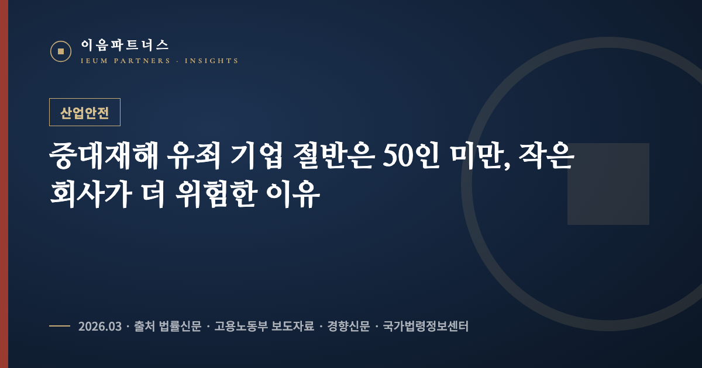

중대재해 유죄 기업 절반은 50인 미만, 작은 회사가 더 위험한 이유

중대재해처벌법은 큰 회사 이야기라고 생각하는 대표님이 아직 많습니다. 그런데 실제로 유죄 판결을 받은 기업을 보면 작은 사업장이 절반을 넘습니다. 이 글에서는 처벌이 작은 회사에 몰리는 이유와 작은 회사가 먼저 챙길 것을 정리합니다.
2024년 1월 27일부터는 상시 근로자 50명 미만 사업장에도 이 법이 적용되고, 5명 미만 사업장만 빠집니다(국가법령정보센터). 사고가 난 뒤에는 준비할 시간이 없으니, 지금 우리 회사 상태를 한 번 점검해 보시길 권합니다. 어디서부터 볼지 막막하시다면 카카오톡 채널 이음파트너스로 편하게 물어 주세요.
유죄 기업 절반 이상이 50인 미만
법률신문이 법원과 검찰 자료를 모아 보니, 법 시행 뒤 2024년 8월 말까지 1심에서 유죄를 받은 기업 22곳 가운데 12곳이 상시 근로자 50인 미만 사업장이었습니다(법률신문). 당시는 50인 미만 사업장에 법이 적용되기 전이었는데, 이들은 공사금액 50억 원이 넘는 건설 현장이라 법이 적용됐습니다.
| 구분 | 내용 |
|---|---|
| 1심 유죄 기업(2024년 8월 말) | 22곳 가운데 50인 미만 12곳 |
| 2025년 사고사망자 | 605명 가운데 50인(억) 미만 351명, 5인(억) 미만 174명 |
| 5인(억) 미만 사망자 | 1년 새 22명(14.5%) 증가 |
| 적용 범위 | 2024년 1월 27일부터 50명 미만도 적용, 5명 미만은 제외 |
사고 자체도 작은 사업장에 몰립니다. 고용노동부에 따르면 2025년 재해조사 대상 사고사망자 605명 가운데 351명이 50인(건설업은 공사금액 50억 원) 미만 사업장에서 나왔고, 5인 미만에서만 174명이 숨졌습니다(고용노동부 보도자료).
왜 작은 회사에 처벌이 몰릴까
위험을 찾아 고치는 절차, 종사자 의견을 듣는 절차, 안전 예산 편성처럼 법이 요구하는 항목은 모두 사람과 돈이 드는 일입니다. 여유가 없는 회사일수록 기본 체계부터 비어 있기 쉽고, 사고가 나면 이 빈자리가 곧바로 의무 위반이 됩니다.
재판 대응에서도 차이가 납니다. 같은 기사에서 검사장 출신 한 변호사는 대기업은 안전조치에 많은 돈을 쓸 수 있어 혐의 입증이 쉽지 않을 것이라며 “사실상 처벌은 규모가 영세한 사업장에 쏠릴 수 있다”고 말했습니다(법률신문).
정부도 작은 사업장을 보고 있습니다
고용노동부는 고위험 업종의 작은 사업장을 전담 관리하고 지도·점검을 늘리면서 재정 지원도 연계하겠다고 밝혔습니다. 개선 의지가 부족한 사업장은 감독 대상에 넣겠다는 방침도 함께 내놨습니다. 지원 사업은 신청을 회사가 직접 하고, 지원 여부와 금액은 각 기관 심사로 정해집니다.
대표님이 지금 확인할 것
- 본사·지점·공장 인원을 합치면 상시 근로자가 몇 명인지
- 위험성평가(작업장의 위험을 찾아 크기를 따지고 줄이는 절차)를 올해 실제로 했고, 결과대로 고친 기록이 있는지
- 안전보건 예산이 따로 편성돼 있고, 어디에 쓰였는지 남아 있는지
- 정부의 작은 사업장 안전 지원 사업 가운데 우리 회사가 신청할 수 있는 것이 있는지
참고한 자료
- 중대재해처벌법에 중기 취약, 유죄 절반이 50인 미만 사업장 — 법률신문 (2024.09.25)
- 2025년(누적) 산업재해 현황 부가통계 ‘재해조사 대상 사망사고 발생 현황’ 잠정결과 발표 — 고용노동부 보도자료 (2026.03.31)
- 작년 하반기 중대재해사업장 22곳…경영책임자 실형 1명 — 경향신문 (2026.03.31)
- 중대재해 처벌 등에 관한 법률 — 국가법령정보센터 (현행 법령)
작은 회사에 맞는 안전관리 체계를 어디서부터 갖출지 궁금하시다면 카카오톡 채널 이음파트너스로 편하게 물어 주세요.
※ 이 글은 일반적인 정보 제공을 위한 것으로, 개별 사안은 세무사·노무사 등 전문가와 함께 확인하시기 바랍니다.